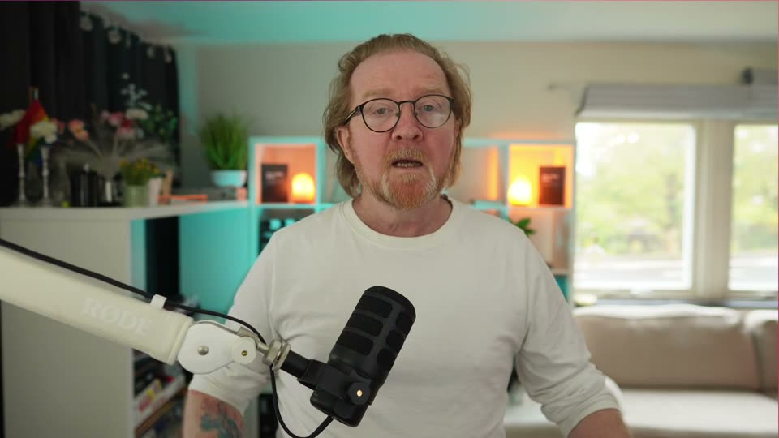
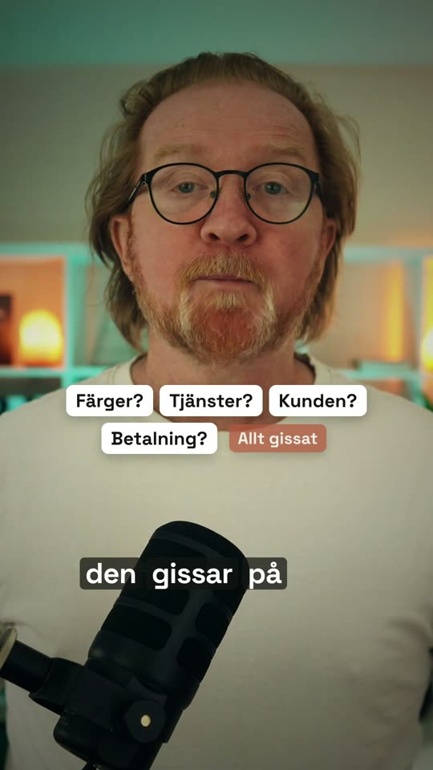
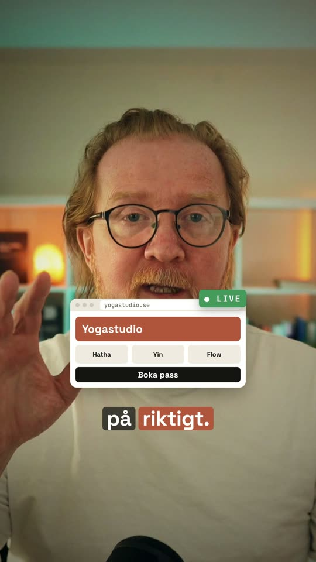
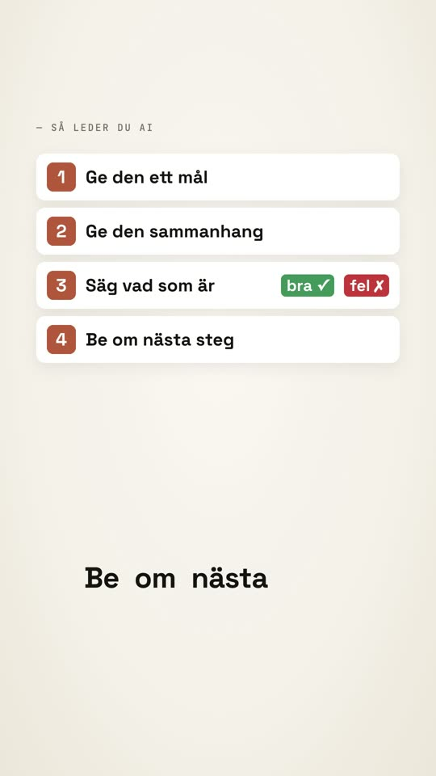
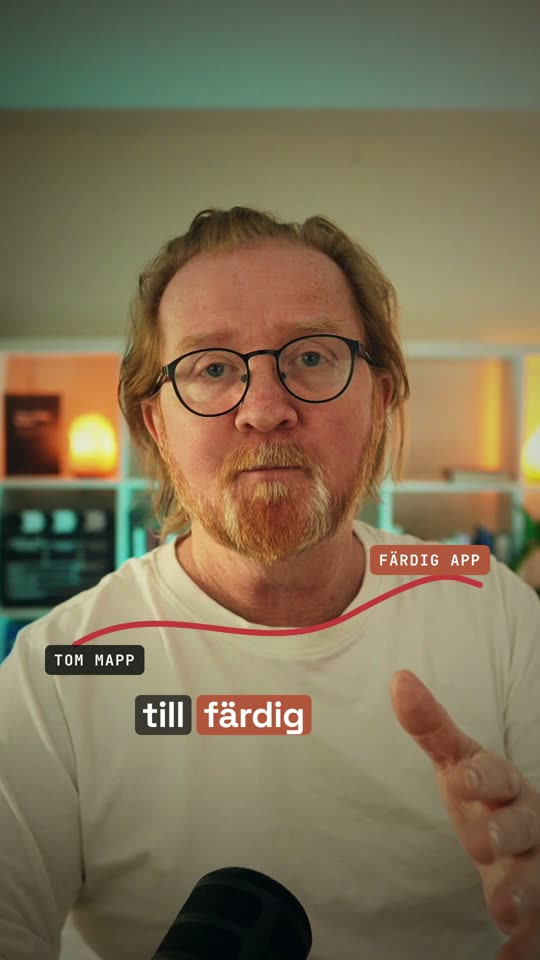
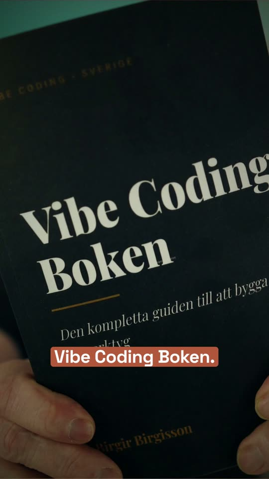
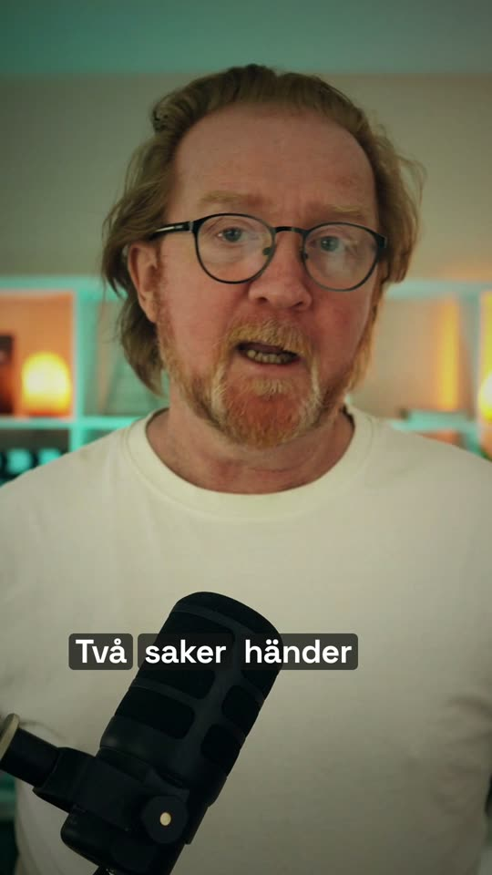
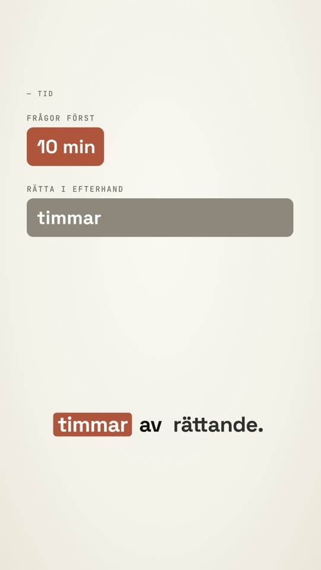
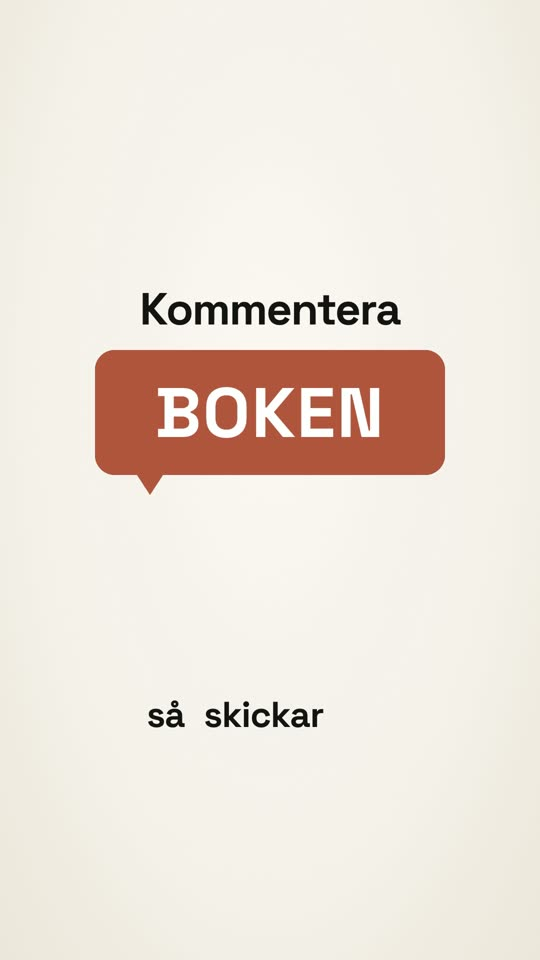

Du pratar in i kameran. Claude Code lyssnar på vad du säger, klipper bort pauser och omtagningar, textar på svenska och bygger grafiken med HyperFrames, så att den landar på precis rätt ord. Utan att du öppnar ett redigeringsprogram.
Verktygen: Claude Code och HyperFrames. HyperFrames är gratis och har öppen källkod. Det enda som kostar är ditt Claude-abonnemang.
Claude Code + HyperFrames
Modul 01
Du ger Claude Code en rå inspelning där du pratar in i kameran. Tillbaka får du en färdig video: klippt, färgsatt, textad, med animerad grafik som dyker upp i samma ögonblick som du säger ordet.
Det låter som ett videoverktyg med en AI-knapp, men det är något annat. Claude Code är en agent som arbetar på din egen dator. Den transkriberar ditt tal ord för ord, läser vad du säger, bestämmer vilken grafik som förklarar det bäst, skriver grafiken som kod och renderar en färdig fil. Du styr genom att skriva vad du vill ha, på vanlig svenska.
In: rå inspelning

Ut: färdig video

Talet transkriberas med en tidpunkt för varje ord.
Pauser, omtagningar och sidospår tas bort.
Claude läser vad du säger och planerar grafiken.
Textning och grafik skrivs som kod, synkat mot orden.
Du granskar, rättar i vanlig svenska och får en färdig fil.
Nyckelinsikt
Skillnaden mot färdiga klick-verktyg är att grafiken inte kommer från en mall. Säger du "ställ tio frågor" kan Claude bygga en lista som räknar upp. Säger du "appen ligger live" kan den rita en liten webbsida som slås på. Grafiken följer innehållet, inte tvärtom.
Modul 02
Fyra verktyg gör jobbet. Du behöver inte lära dig något av dem. Claude Code använder dem åt dig. Din uppgift är bara att se till att de finns på datorn.
| Verktyg | Vad det gör | Kostnad |
|---|---|---|
| Claude Code | Agenten som leder arbetet. Läser, planerar, skriver kod och kör de andra verktygen. | Ingår i ett betalt Claude-abonnemang. |
| ffmpeg | Klipper, beskär och färgsätter videon och tar hand om ljudet. | Gratis. |
| HyperFrames | Gör video av webbkod. Det är så Claude kan bygga textning och animerad grafik. | Gratis, öppen källkod. |
| Whisper | Lyssnar på talet och skriver ut det med tidpunkter. Körs på din dator. | Gratis. Modellen är en nedladdning på ungefär 3 GB. |
En vanlig mapp på datorn, till exempel video-projekt. Mer än så behöver du inte göra själv.
Välj mappen som projekt i Claude-appens Code-flik. Allt Claude gör händer sedan i den mappen.
Claude Code skapar undermapparna, kontrollerar vad som finns på datorn och installerar det som saknas. Den frågar innan något installeras.
Det här ska bli mitt projekt för att redigera video med HyperFrames. 1. Skapa tre undermappar: raw (för inspelningar), manus (för mina manus) och output (för färdiga videor). 2. Kontrollera om ffmpeg, Node och HyperFrames finns installerade. Installera det som saknas. 3. Ladda ner Whisper-modellen large-v3, så att du kan transkribera svenska. 4. Skapa en fil som heter CLAUDE.md där du skriver ner hur projektet är upplagt. Berätta när allt är klart och vad jag ska göra härnäst.
Om utrymme
Videofiler är stora. En minut i 4K väger ungefär 250 MB, och arbetet skapar tillfälliga mellanfiler. Ha gärna 10 GB ledigt, eller lägg projektmappen på en extern disk. Be Claude städa bort mellanfilerna när en video är klar.
Modul 03
Det mesta av slutresultatet avgörs innan redigeringen börjar. Tre vanor gör inspelningen lätt att klippa, och en fjärde gör att grafiken kan hamna rätt.
Blir en mening fel säger du om den, hela meningen, och fortsätter. Stanna inte inspelningen. Claude väljer den sista hela tagningen.
Inga ramar, loggor eller texter i bilden. Allt sådant läggs på efteråt. En ren bild ger frihet att beskära och zooma.
Det behöver inte följas ordagrant. Men det avgör vilken version som gäller när du har sagt samma sak på två sätt.
Filmar du liggande i hög upplösning kan samma inspelning bli både en stående video för sociala medier och en liggande för hemsidan. Den stående skärs ut ur mitten av bilden, så det är där du ska vara.
Modul 04
En bra klippning märks inte. Den som tittar ska uppleva att du pratar ledigt och utan tvekan. Du klipper ingenting själv. Claude Code gör hela klippningen, och den här modulen visar vad som händer så att du vet vad du kan förvänta dig.
Du behöver inte kunna något av det här. Det står redan i startprompten längre ner. Men det är bra att veta vad som pågår, så att du kan säga till om något låter fel.
Claude Code mäter var ljudet faktiskt tystnar och lägger klippen där, i stället för att lita blint på transkriptet.
Korta andningspauser inne i en mening får vara kvar, så att orden inte smetas ihop.
Varje klipp får en liten marginal på slutet, så att inget ord kapas.
Det enda du behöver be om: rör inte rösten
Lämnad åt sig själv vill en AI gärna "förbättra" ljudet med brusreducering och kompressor. Resultatet blir ofta en gäll, metallisk röst. Har du en bra mikrofon låter det bäst att bara höja volymen till en jämn nivå. Därför står det uttryckligen i startprompten.
Lägg din inspelning i mappen raw och klistra in det här. Byt ut det som står inom hakparentes. Resten sköter Claude Code.
Jag har lagt en inspelning i mappen raw. Jag pratar svenska rakt in i kameran. Manuset ligger i manus/[filnamn]. Gör en färdig [stående 9:16 / liggande 16:9] video för [TikTok och Instagram / hemsidan och Facebook]. Bygg grafiken med HyperFrames. 1. Kontrollera att filen är hel. Transkribera talet på svenska med tidpunkt per ord. 2. Klipp bort pauser, omtagningar och sidospår. Behåll den sista hela tagningen av varje mening. Klipp där ljudet tystnar, aldrig mitt i en fras, och låt sista ordet klinga ut. 3. Ljudet ska låta som originalet: ingen brusreducering, ingen kompressor, bara jämn volym. 4. Lägg på textning, två till fyra ord åt gången, med nyckelordet markerat. 5. Läs vad jag säger och bygg animerad grafik som förklarar det, synkad på ordet. En sak i taget. Ingenting får täcka mitt ansikte. 6. Visa stillbilder av varje grafik och en förhandsversion innan du renderar. Vänta på mitt besked. Är något oklart, till exempel om jag har sagt samma sak på två sätt, så fråga i stället för att gissa.
Modul 05
Det är här arbetssättet skiljer sig från allt annat. Eftersom Claude vet exakt när varje ord sägs kan grafiken dyka upp i samma ögonblick, och eftersom den skrivs som kod kan den bli vad som helst.

Visa saken"...och då finns den på riktigt." En liten sajt byggs upp och slås på.

Räkna uppVarje steg kommer in när det nämns, i en ljus scen i helbild.

Rita bilden"En röd tråd, från tom mapp till färdig app." Linjen ritas medan det sägs.

Klipp in en extrabildNärbilden kommer exakt på produktens namn. Rösten fortsätter under.
Du behöver inte peka ut var grafiken ska ligga. Claude Code läser vad du säger och väljer själv. Ungefär så här:
Vill du ha något särskilt säger du det bara: "När jag säger 50 prompts vill jag se siffran stort."
Två saker kan gå fel: grafik som hamnar över ansiktet och textning som inte går att läsa. Claude Code undviker båda genom att dela in skärmen i zoner. Bilden visar hur det ser ut, så att du känner igen när något har hamnat fel.
Vit text direkt på en vit tröja. Svart text som hamnar på en svart mikrofon. Fem ord på två rader.
Två till fyra ord. Vit text på mörk platta. Nyckelordet på färgad platta. Alltid en rad, alltid på samma höjd.

Plattor bakom ordenLäsbart mot vit tröja och svart mikrofon.

Ljus scen i helbildGer variation och plats för det som behöver förklaras.

Tydlig avslutningEn uppmaning, ett ord. Låt den stå kvar en stund i tystnad.
Alla exempel i den här kursen har samma typsnitt, samma färger och samma sorts kort. Det beror på att jag har en brandfil, BRAND.md, i projektmappen. Där står mina färger, typsnitt och hur saker ska se ut. Claude Code läser filen och följer den, så att varje ny video ser ut att höra ihop med de förra.
Har du ingen brandfil ber du Claude Code skapa en: "Titta på min hemsida och skriv en BRAND.md med mina färger och typsnitt. Använd den i alla videor."
Din roll är att titta, inte att kunna reglerna
När grafiken ska komma in, hur länge den ska stå kvar och hur mycket som får hända samtidigt är Claude Codes sak att hålla reda på. Du behöver bara säga vad du ser: "Bilden på boken försvinner för fort." Det räcker.
Modul 06
Första versionen blir sällan perfekt. Det gör ingenting, för rättningarna tar sekunder att ge. Det som avgör hur bra det blir i längden är vad som händer med rättningarna efteråt.
Säg vad du ser, ungefär när, och vad du vill ha i stället. Du behöver inga facktermer.
Claude Code läser automatiskt en fil som heter CLAUDE.md varje gång du öppnar projektet. Be Claude föra in varje rättning där som en kort regel: vad som blev fel och vad som gäller nu. Skriv det som en instruktion i filen redan första dagen:
Varje gång jag rättar något i en video: 1. Rätta videon. 2. Skriv in rättningen som en regel i den här filen. 3. Gå igenom alla regler som en checklista innan du visar nästa förhandsversion.
Efter fem eller sex videor har du en lista som beskriver precis hur du vill ha det. Då kommer förhandsversionerna allt oftare tillbaka utan något att anmärka på.
Förhandsvisningen spelar upp video och ett tjugotal ljud samtidigt i webbläsaren, och det kan hacka även när allt är rätt. Det påverkar inte den färdiga filen, som renderas bildruta för bildruta. Be Claude göra mellanfilerna lättare, och ha bara en förhandsvisning öppen åt gången.
När videon är godkänd
Be Claude rendera, kontrollera den färdiga filen (längd, ljudnivå, inga frysta bilder) och sedan städa: mellanfiler bort, råfilen till papperskorgen om du har originalet kvar. Ett litet avslut som håller mappen användbar.
Modul 07
Allt du har läst gäller oavsett format. Transkriberingen, klippningen och synken mot orden är desamma. Det som ändras är hur ytan används.
| Stående 9:16 | Liggande 16:9 | |
|---|---|---|
| Passar för | TikTok, Reels, Shorts. | Hemsidan, YouTube, Facebook. |
| Bilden | Skärs ut ur mitten av en liggande inspelning. | Används som den är. Sätt dig gärna lite vid sidan, så blir det plats för grafik. |
| Grafiken | Över bröstet, eller som ljus scen i helbild. | Bredvid dig, eller som en remsa nertill. |
| Tempo | Högt. Något nytt varannan till var fjärde sekund. | Lugnare. Grafiken kan stå kvar längre och förklara mer. |
| Längd | 30 till 60 sekunder. | Fungerar även för flera minuter. |
Säg att du spelar in en liggande film om ett ämne som kräver förklaring. Du säger: "Vad är ett webbhotell? Jo..." och förklarar. Eftersom Claude läser transkriptet kan du be om precis det:
Lägg in lite grafik där det passar.
Varje gång jag ställer en fråga och svarar på den ("Vad är X? Jo..."), bygg en enkel förklarande bild bredvid mig som visar svaret. Låt den stå kvar tills förklaringen är slut.
Gör båda av samma inspelning
Filmar du liggande i hög upplösning och sitter i mitten kan du be om två versioner: en liggande för hemsidan och en kortare stående för sociala medier. Klippningen görs en gång. Det är bara ytan som byggs om.
Quiz
Svara intuitivt. Inga poäng dras vid fel, du ser bara hur det ligger till.
0 av 3
Bra jobbat. Du har koll på principerna.
Klar
Nu vet du hur en rå inspelning blir en färdig video med grafik på rätt ord. Börja med en kort inspelning, en minut räcker, och låt regelfilen växa därifrån.
Kort, lågmält, på svenska. Ett mejl i veckan med tre sektioner som matchar tonen i den här kursen.
Under 5 minuters läsning. Inga skräpmejl. Du kan när som helst avregistrera dig.